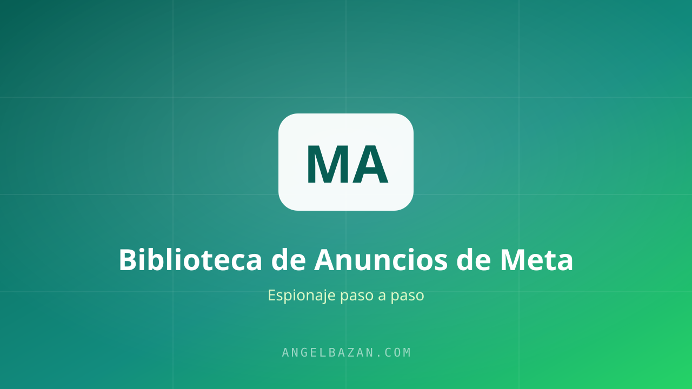

Cómo usar la Biblioteca de Anuncios de Meta para espiar a tu competencia (guía paso a paso)
Aprende a usar la Biblioteca de Anuncios de Meta para espiar los anuncios de tu competencia, detectar ofertas que ya venden y modelarlas sin reinventar la rueda.
En este artículo
La Biblioteca de Anuncios de Meta es, sin discusión, la mejor herramienta gratuita de investigación de mercado que existe. Te muestra todos los anuncios que están corriendo en Facebook, Instagram y Messenger, con su texto, su creativo y desde cuándo están activos. Es la puerta de entrada del funnel hacking, y en esta guía te llevo paso a paso desde cero.

Qué es y por qué es la mejor herramienta gratis
Desde 2019, Meta está obligada a publicar quién anuncia qué, cuánto gasta en temas políticos y, para todo anunciante, la fecha de inicio de cada anuncio. Eso significa que puedes ver qué está pautando cualquier negocio ahora mismo, sin pagar un centavo.
¿Por qué importa la fecha? Porque un anuncio activo desde hace 6 meses con presupuesto detrás es un anuncio que está generando ventas. Nadie mantiene vivo un anuncio que pierde dinero durante meses. Esa señal por sí sola vale más que cualquier curso.
Cómo buscar anuncios de tu competencia
- Entra a facebook.com/ads/library.
- Selecciona el país o la región donde opera tu mercado.
- En "Categorías de anuncios", elige "Todos los anuncios".
- Busca por palabra clave (ej: "funnel WhatsApp", "curso de repostería") o por página específica de tu competidor.
- Filtra por "Estado: Activo" y ordena lo que te interese.
El truco está en buscar por página una vez que identificas quién vende bien: verás toda su cartera de anuncios, cuáles son los ganadores (los más antiguos) y cómo evolucionan sus mensajes.
Qué analizar de cada anuncio
- El ángulo del titular: qué promesa hacen, en qué dolor o deseo se apoyan.
- El destino del clic: ¿página de ventas, quiz, formulario o directo a WhatsApp?
- El tipo de creativo: foto, carrusel, video UGC, testimonial…
- La duración: si lleva 3+ meses activo, es un ganador convalidado.
- El llamado a la acción: "Enviar mensaje", "Comprar", "Registrarse" — te dice el objetivo de campaña.
El truco de la temporalidad: anuncios que llevan meses
Este es el dato que la mayoría ignora. Cuando veas un anuncio activo desde hace 4, 6 u 8 meses, no estás viendo un anuncio: estás viendo una máquina de ventas andando. Ese anuncio pasó la fase de testeo, encontró un público, un mensaje y una oferta que convierten, y sigue escalando.
Si el anuncio lleva meses vivo, el funnel detrás convierte. Tu trabajo no es adivinarlo: es copiar la estructura con tu propia salsa.
Del anuncio al funnel completo (incluido WhatsApp)
En mi rubro —funnels + Meta Ads + WhatsApp— el análisis no termina en la biblioteca. Hago clic en el anuncio y sigo todo el recorrido:
- Si manda a WhatsApp: ¿qué mensaje de bienvenida recibe el lead? ¿Responde una persona o un bot con IA?
- Si manda a una página: ¿qué secciones tiene, cómo presenta la oferta, qué mecanismo usa?
- ¿Hay retargeting? ¿Qué mensaje recibe quien abandonó el embudo?
Ese recorrido completo —anuncio → WhatsApp → conversación → cierre— es el embudo que vas a modelar.
Cierra el círculo con IA
Una vez que juntas 10-20 anuncios ganadores, pásalos a la IA (ChatGPT, Claude o Gemini) y pídele que detecte patrones: ángulos repetidos, estructuras de promesa, ganchos. La IA no decide por ti: te acelera el análisis. El criterio sigue siendo tuyo.
En mi artículo sobre cómo usar IA para espiar anuncios te dejo el prompt exacto que uso.

Angel Bazán
Especialista en funnels, Meta Ads y WhatsApp + IA. Ayudo a negocios a vender más combinando tráfico pagado con conversaciones automatizadas.
Conoce más sobre mí →Aprende a crear y vender productos digitales con Meta Ads, WhatsApp e IA
Clases en vivo, estrategias y recursos para construir tu sistema desde cero. 🚀
Únete gratis al grupo